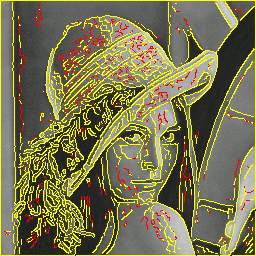

Feature Extraction
Sobel Gradient Magnitude

In the following example the sobel gradient magnitude is computed.
require 'hornetseye_v4l2'
require 'hornetseye_xorg'
include Hornetseye
class Node
def sobel_norm
Math.sqrt sobel(0) ** 2 + sobel(1) ** 2
end
end
input = V4L2Input.new
X11Display.show { input.read_ubyte.sobel_norm.normalise 255 .. 0 }
Roberts Cross Edge Detector

Roberts cross edge detector consists of two small filters. The image is correlated with both filters. The final edge image is computed by taking the sum of the two correlation results.
require 'hornetseye_rmagick'
require 'hornetseye_xorg'
include Hornetseye
class Node
def roberts
filter1 = MultiArray(SINT, 2)[[-1, 0], [0, 1]]
filter2 = MultiArray(SINT, 2)[[ 0, -1], [1, 0]]
convolve(filter1).abs + convolve(filter2).abs
end
end
img = MultiArray.load_ubyte 'http://www.wedesoft.de/hornetseye-api/images/grey.png'
img.roberts.normalise(0xFF .. 0).show
Difference of Gaussian
The difference of Gaussian is simply the difference of two Gaussian filters of different size.
require 'hornetseye_rmagick'
require 'hornetseye_xorg'
include Hornetseye
img = MultiArray.load_ubytergb 'http://www.wedesoft.de/hornetseye-api/images/colour.png'
dog = img.gauss_blur(1.5) - img.gauss_blur(3.0)
dog.normalise.show
Laplacian of Gaussian

The LoG-filter creates an image with zero-crossings at edge locations. The edges can be detected using either dilation or erosion. Alternatively one could match a set of small 3x3 patterns. The notable property of edge detection using the LoG-filter is that it generates closed edge contours.
require 'hornetseye_xorg'
require 'hornetseye_rmagick'
include Hornetseye
img = MultiArray.load_ubyte 'http://www.wedesoft.de/hornetseye-api/images/lena.jpg'
log = MultiArray.laplacian_of_gaussian 1.4, 9
binary = img.convolve(log) >= 0
binary.not.or(binary.erode).conditional(0xFF, 0).show
Canny Edge Detector

The Canny edge detector uses two thresholds. The gradient norm is used to select edges. The gradient orientation is used to perform non-maxima suppression for edges. Edges are suppressed if the gradient is below the high threshold and the edge is not connected to edges with a gradient norm surpassing the high threshold. The Canny algorithm requires tracing along the edges. Here full connectivity is used instead.
require 'hornetseye_v4l2'
require 'hornetseye_xorg'
include Hornetseye
HIGH = 6.0
LOW = 0.75
input = V4L2Input.new
w, h = input.width, input.height
X11Display.show do
img = input.read_ubyte
x = img.gauss_gradient 1.4, 0, 0.5
y = img.gauss_gradient 1.4, 1, 0.5
norm = Math.hypot x, y
angle = Math.atan2 y, x
orientation = ((2 * Math::PI - Math::PI / 8 + angle) * (4 / Math::PI)).to_ubyte % 4
idx, idy = lazy(w, h) { |i,j| i }, lazy(w, h) { |i,j| j }
dx, dy = orientation.lut(Sequence[-1, 0, 1, 1]), orientation.lut(Sequence[-1, -1, -1, 0])
low = norm >= norm.warp(idx + dx, idy + dy).major(norm.warp(idx - dx, idy - dy)).major(LOW)
high = norm >= HIGH
comp = low.components
hist = comp.histogram comp.max + 1, :weight => high.to_int
edges = low.and comp.lut(hist > 0)
edges.conditional high.conditional(RGB(255, 255, 0), RGB(255, 0, 0)), img
end
Corner Strength by Yang et al.

The following program computes the corner strength measure by Yang, Burger, Firmin, and Underwood.
require 'hornetseye_rmagick'
require 'hornetseye_xorg'
include Hornetseye
GRAD_SIGMA = 2.0
COV_SIGMA = 1.0
NOISE = 1.0
EXP = 0.5
img = MultiArray.load_ubyte 'http://www.wedesoft.de/hornetseye-api/images/grey.png'
x = img.gauss_gradient GRAD_SIGMA, 0
y = img.gauss_gradient GRAD_SIGMA, 1
a = (x * x).gauss_blur COV_SIGMA
b = (y * y).gauss_blur COV_SIGMA
c = (x * y).gauss_blur COV_SIGMA
g = ((a - b) ** 2 + (2 * c) ** 2) / (a + b + NOISE ** 2) ** 2
result = g.normalise(1.0 .. 0.0) ** EXP * (x ** 2 + y ** 2)
result.normalise(0xFF .. 0).show
Harris-Stephens Corner- and Edge-Detector

This program implements the Harris-Stephens corner- and edge-detector. In the resulting image corners will appear white while edges will become black.
require 'hornetseye_rmagick'
require 'hornetseye_xorg'
include Hornetseye
GRAD_SIGMA = 1
COV_SIGMA = 1
K = 0.05
img = MultiArray.load_ubyte 'http://www.wedesoft.de/hornetseye-api/images/grey.png'
x = img.gauss_gradient GRAD_SIGMA, 0
y = img.gauss_gradient GRAD_SIGMA, 1
a = (x * x).gauss_blur COV_SIGMA
b = (y * y).gauss_blur COV_SIGMA
c = (x * y).gauss_blur COV_SIGMA
tr = a + b
det = a * b - c * c
r = det - tr * tr * K
r.normalise.show
Shi-Tomasi Corner Detector
Here is an implementation of the Shi-Tomasi corner-detector.
require 'hornetseye_rmagick'
require 'hornetseye_xorg'
include Hornetseye
GRAD_SIGMA = 1
COV_SIGMA = 1
img = MultiArray.load_ubyte 'http://www.wedesoft.de/hornetseye-api/images/grey.png'
x = img.gauss_gradient GRAD_SIGMA, 0
y = img.gauss_gradient GRAD_SIGMA, 1
a = (x * x).gauss_blur COV_SIGMA
b = (y * y).gauss_blur COV_SIGMA
c = (x * y).gauss_blur COV_SIGMA
tr = a + b
det = a * b - c * c
# "major" is needed to deal with numerical errors.
dissqrt = Math.sqrt((tr * tr - det * 4).major(0.0))
# Take smallest eigenvalue. Eigenvalues are "0.5 * (tr +- dissqrt)"
result = 0.5 * (tr - dissqrt)
result.normalise(0xFF .. 0).show
Feature Locations

Usually computing a feature image is not enough and one needs to determine the locations of the most prominent features. This can be achieved by thresholding the image and then locating the maxima (i.e. performing non-maxima suppression for corners). HornetsEye does not support non-maxima suppression directly. However one can use greylevel dilation followed by masking as shown below.
require 'hornetseye_rmagick'
require 'hornetseye_xorg'
include Hornetseye
class Node
def nms(threshold = 0.05)
self >= dilate.major(threshold)
end
def harris(sigma_grad = 1.0, sigma_avg = 1.0, k = 0.05)
x, y = gauss_gradient(sigma_grad, 0), gauss_gradient(sigma_grad, 1)
a = (x * x).gauss_blur sigma_avg
b = (y * y).gauss_blur sigma_avg
c = (x * y).gauss_blur sigma_avg
tr = a + b
det = a * b - c * c
det - tr * tr * k
end
end
img = MultiArray.load_ubyte 'http://www.wedesoft.de/hornetseye-api/images/grey.png'
img.harris.nms.dilate(3).conditional(RGB(0, 255, 0), img).show
See Also
- Hornetseye::Node#convolve
- Hornetseye::Node#sobel
- Hornetseye::Node#gauss_blur
- Hornetseye::Node#gauss_gradient